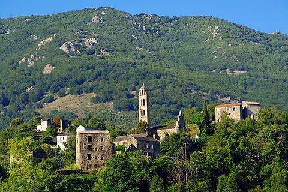

Piedicroce évszázadokon át a Castagniccia vidékének megkerülhetetlen központja volt, földrajzi elhelyezkedése miatt pedig stratégiai szerepet játszott a sziget történelmében. A külvilágtól elzárt, nehezen megközelíthető falu ideális bázisul szolgált a genovai elnyomás ellen szerveződő korzikai ellenállás számára. A falu és a környező völgyek adták a sziget legkeményebb szabadságharcosait, és itt, a hegyek biztonságában formálódtak azok az eszmék, amelyek később Pasquale Paoli felvilágosult köztársaságához és a történelmi alkotmány megírásához vezettek. Piedicroce ma is a hamisítatlan, büszke korzikai identitás egyik legélőbb bástyája.
A falu szívében magasodó Saint-Pierre-et-Saint-Paul plébániatemplom Korzika egyik legszebb és legimpozánsabb barokk egyházi műemléke. A 17. században épült templom hatalmas méretei és gazdagon díszített homlokzata hűen tükrözi azt a gazdasági jólétet, amelyet a régió a gesztenyetermesztés aranykorában élvezett. Belépve egy lenyűgöző, freskókkal borított belső tér fogadja a látogatót, ahol a sziget legrégebbi, 17. századból származó orgonája is található. Ez a monumentális kőépület és a hozzá tartozó grandiózus harangtorony messze kiemelkedik a tájból, hirdetve a hegyi közösségek egykori szellemi és anyagi erejét.
A falu közvetlen közelében találhatók a történelmi Orezza-kolostor (Couvent d'Orezza) megrázó szépségű romjai. Ez a ferences rendi kolostor nemcsak vallási központ volt, hanem a korzikai történelem igazi politikai boszorkánykonyhája: itt tartották a legfontosabb nemzeti gyűléseket (consultas), és 1735-ben a falai között fektették le a független Korzika alapjait, valamint itt nyilvánították a sziget védőszentjévé a Szűzanyát. Bár a második világháború alatt a megszálló német csapatok megsemmisítették és felrobbantották a komplexumot, a sűrű növényzettel benőtt, ég felé meredő csupasz kőfalak ma is az emlékezés és a korzikai szabadságvágy drámai és szent emlékhelyének számítanak.